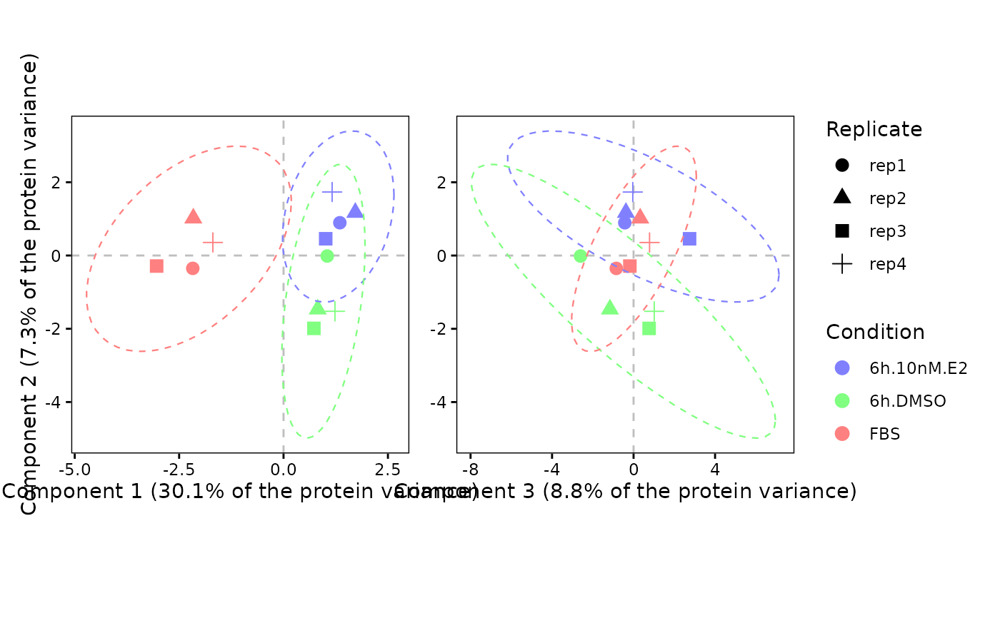

Combines the component1-vs-component2 and component3-vs-component2 scatters of a sPLS-DA.
plot.sPLSDA.scatter.123(
DEprot.sPLSDA.object,
color.column = NULL,
shape.column = NULL,
label.column = NULL,
dot.colors = NULL,
ellipse = TRUE,
ellipse.level = 0.95,
title = NULL
)An object of class DEprot.sPLSDA.
String indicating the name of the column in the metadata to use as factor for the dot colors. Default: NULL (the column used to fit the model).
String indicating the name of the column in the metadata to use as factor for the dot shapes. Default: NULL (all dots).
String indicating the name of the column in the metadata to use as label of the dots. Default: NULL (no labeling).
Color-vector to use for the points. Default: NULL (automatic colors).
Logical value indicating whether a confidence ellipse should be drawn around each group. Default: TRUE.
Numeric value (0-1) indicating the confidence level of the ellipses. Default: 0.95.
String indicating the title of the combined plot (markdown annotation supported). Default: NULL.
A patchwork object.
splsda <- perform.sPLSDA(DEprot.object = DEprot::test.toolbox$dpo.imp,
group.column = "condition",
keepX = 5,
validate = FALSE)
#> Warning: The number of 'folds' (5) is larger than the smallest class (4 samples): 'folds' has been set to 4.
plot.sPLSDA.scatter.123(DEprot.sPLSDA.object = splsda,
shape.column = "replicate")
#> Warning: The following aesthetics were dropped during statistical transformation: shape.
#> ℹ This can happen when ggplot fails to infer the correct grouping structure in
#> the data.
#> ℹ Did you forget to specify a `group` aesthetic or to convert a numerical
#> variable into a factor?
#> Warning: The following aesthetics were dropped during statistical transformation: shape.
#> ℹ This can happen when ggplot fails to infer the correct grouping structure in
#> the data.
#> ℹ Did you forget to specify a `group` aesthetic or to convert a numerical
#> variable into a factor?
